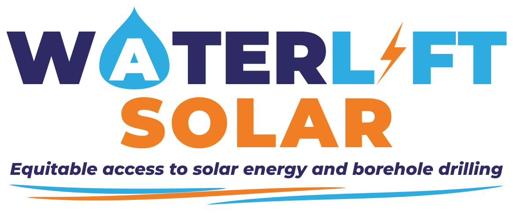
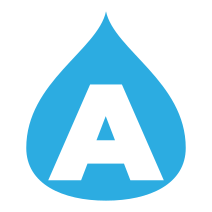
The Solar Talent Registry is Waterlift Solar's online recruitment system for solar PV technicians. Candidates apply from their phones through links in social-media adverts; admins verify credentials, review a preliminary score, run assessments and build a pool of approved technicians.
Both tracks use the same application and the same scoring for experience, technical evidence and referees, so candidates can be compared side by side. Only the entry check (the credential gate) differs. EPRA-licensed candidates can also list qualifications.
| Who | Where | What they can do |
|---|---|---|
| Candidates | careers.waterlift.co.ke…/apply · …/status | Apply, receive a confirmation email, check their status, withdraw, and ask for their data to be deleted. They never see scores or internal labels. |
| Admins | careers.waterlift.co.ke/login | Everything in this manual. There is one role — Admin — and every admin has the same access, protected by a password and a two-factor code. |
The sun/moon button at the top right switches between light and dark mode. The button at the top left collapses the menu.
Admin accounts can see candidates' personal data, so every sign-in needs a password and a 6-digit code from an authenticator app on your phone.
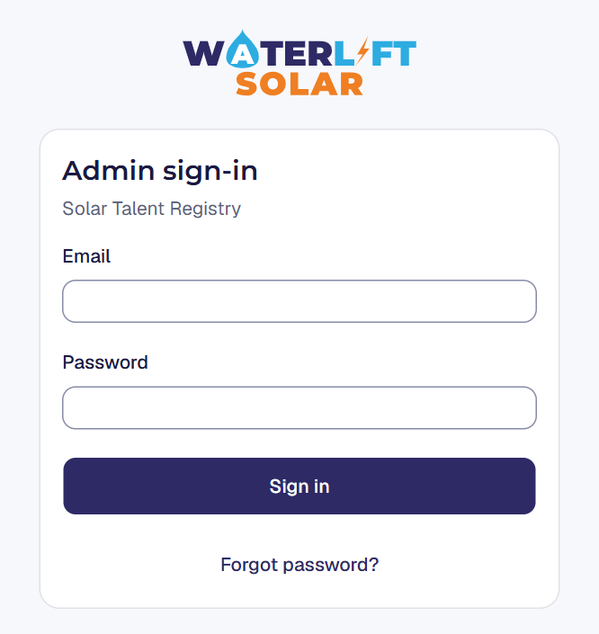
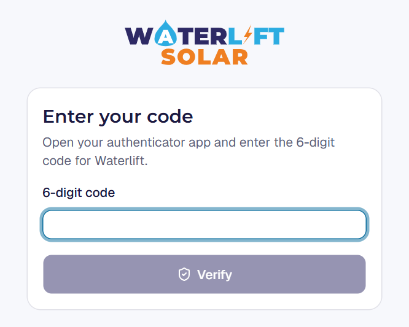
Two-factor is mandatory: until it is set up, the admin pages send you back to the set-up page.
careers.waterlift.co.ke/login and enter your email and password.To sign out, use the arrow button beside your name at the bottom of the menu. Always sign out on shared computers.
On the sign-in page, type your email and choose Forgot password?. A reset link arrives by email (check spam). The same message is shown whether or not the address belongs to an admin, so the page can't be used to discover accounts.
New admins are invited by the system administrator (there is no public sign-up). The new admin receives an email invitation and follows the steps above. To remove an admin, ask the system administrator to deactivate the account; their past actions stay in the audit history.
Every advert should point to the application page with a short tag saying where it was posted. The dashboard then shows which channels bring in applicants.
Start with https://careers.waterlift.co.ke/apply and add tags after a question mark, joined with &:
| Tag | Example | What it does |
|---|---|---|
src | ?src=facebook | Records the channel. Accepted: facebook (or fb), instagram, linkedin, x, tiktok, whatsapp (or wa), youtube. Anything else counts as "Other link". |
utm_source, utm_medium, utm_campaign | ?utm_source=fb&utm_campaign=technicians-2026 | Standard marketing tags, used instead of src if your advert tool adds them automatically. The campaign name is shown on each candidate. |
track | ?track=qualified | Preselects the track: qualified or epra. The candidate can still change it. |
| Advert | Link |
|---|---|
| Facebook post, all technicians | careers.waterlift.co.ke/apply?src=facebook |
| WhatsApp group, qualified technicians | careers.waterlift.co.ke/apply?src=whatsapp&track=qualified |
| LinkedIn, EPRA-licensed, named campaign | careers.waterlift.co.ke/apply?src=linkedin&track=epra&utm_campaign=nairobi-oct |
utm_campaign for each advert run (for example the month or region) so you can compare them in the candidates list and the CSV export.Knowing the candidate's side helps you answer their questions. The application is designed for phones, takes about 10 minutes, and saves answers on the candidate's device as they go.
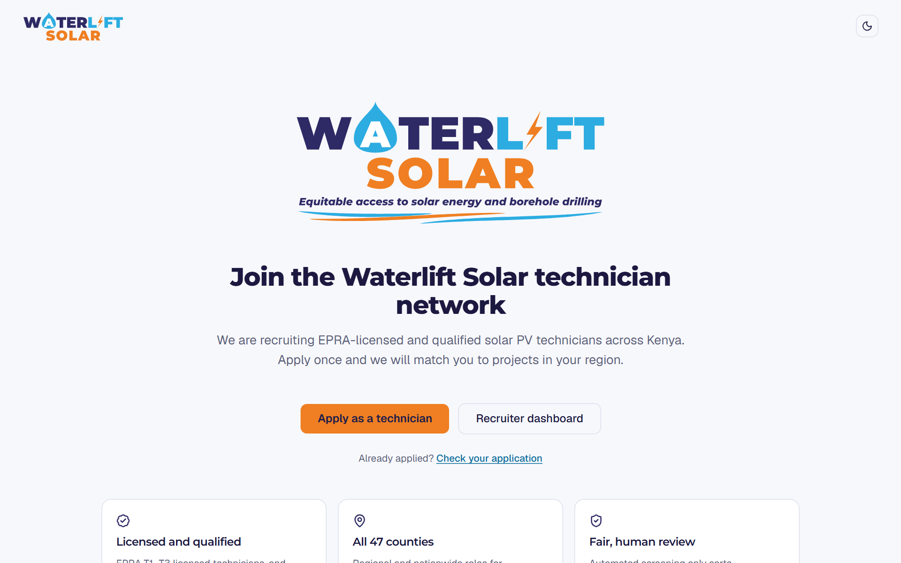
| # | Step | What is asked |
|---|---|---|
| 1 | Identity & location | Full name, mobile (Kenyan number), email, town, county, where they can work (county / region / anywhere in Kenya) and preferred type of work. |
| 2 | Licence & qualifications | The track. EPRA track: licence class T1–T3, licence number, expiry date, optional licence note and copy. Qualified track: at least one qualification (level, course, institution, year, optional certificate number). Up to 3 qualifications on either track. Consent to verification. |
| 3 | Installation experience | Years of solar experience, largest PV array (kWp), optional largest inverter and battery, types of installation, and their largest project and exact role. |
| 4 | Technical capability | Inverter brands/models, battery brands/chemistries, optional logger/site-audit experience, certifications and safety training, high-voltage experience, energy-auditor licence, optional certificate uploads. |
| 5 | Referees & consent | Two referees (a third is optional), consent to processing, optional consent to the 24-month talent pool. |
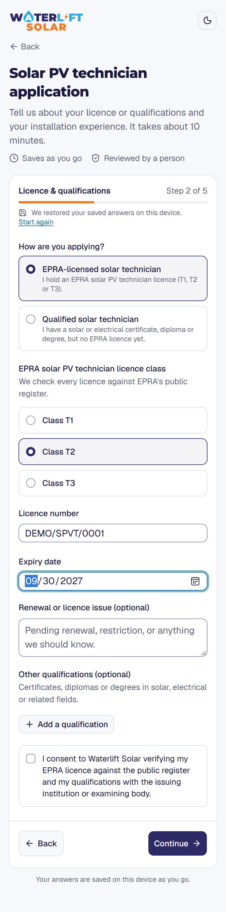
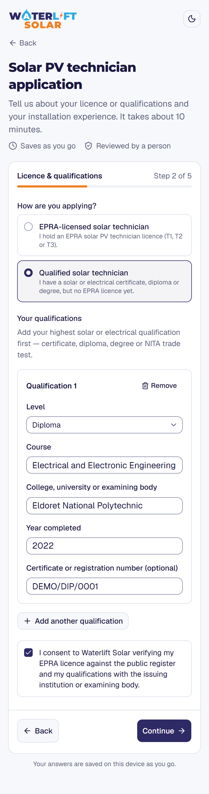
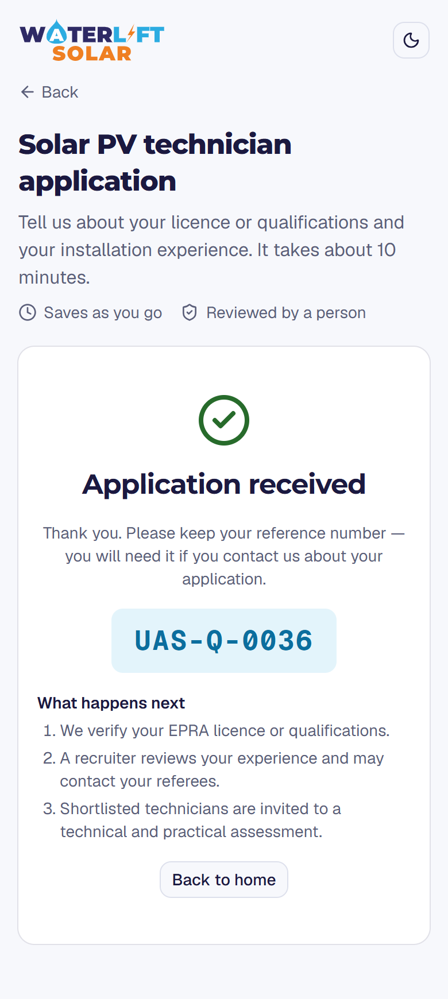
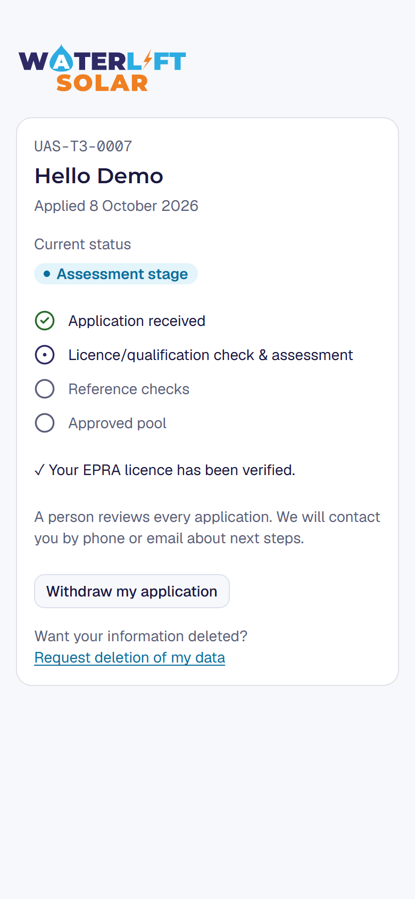
Each application gets a reference made of a county code, the licence class (or Q for the qualified track) and a number — for example NAK-T2-0012 or KIS-Q-0034. Ask candidates for it whenever they contact you.
After submitting, the candidate receives an email with their reference and a private status link valid for 30 days. The status page shows plain-language progress (received → licence/qualification check & assessment → reference checks → approved pool) and whether their licence or qualifications have been verified. It never shows the score.
From the status page the candidate can withdraw their application or request deletion of their data (see chapter 11). If the link has expired, they enter their email at careers.waterlift.co.ke/status and a new link is sent to the email on file.
The first page after sign-in. It gives a quick picture of the whole pipeline.
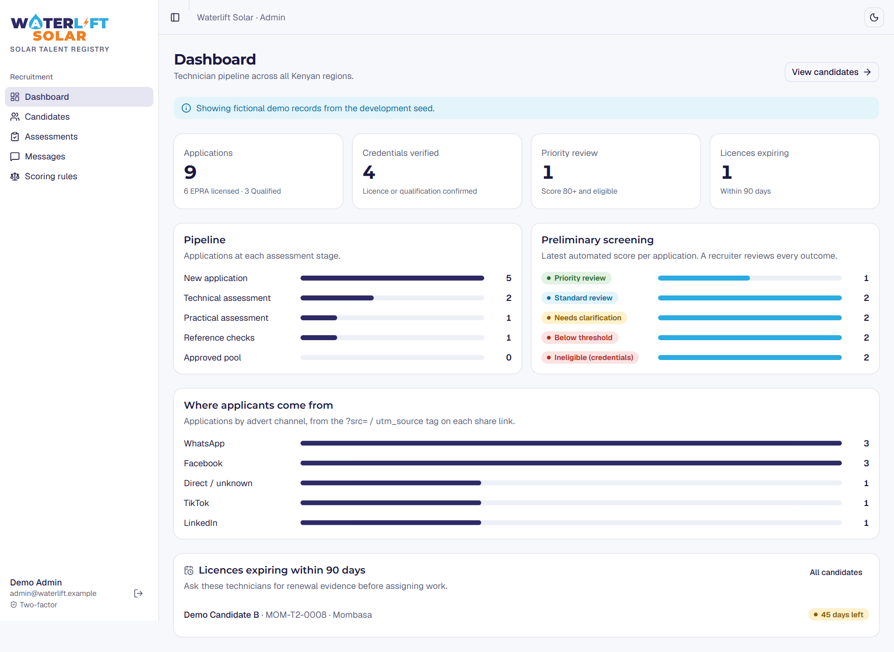
Every application in one table. Click a candidate's name to open their page.
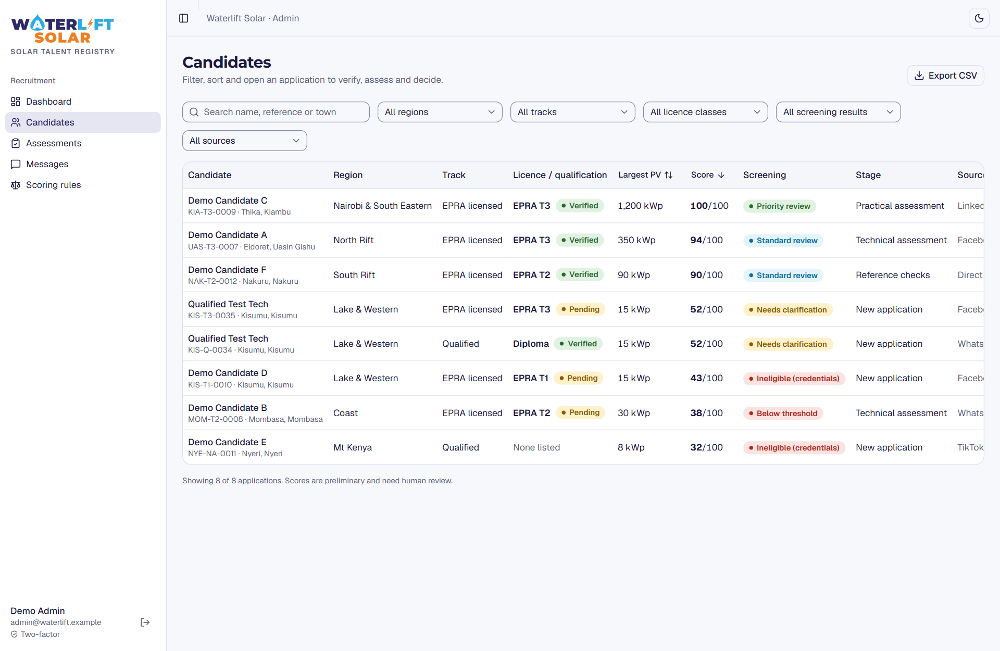
The Licence / qualification column shows the EPRA class with its verification result, or — for qualified candidates — the highest qualification and whether it has been verified. The Screening column shows the preliminary result (see Reference, A.1).
Use Export CSV to download all applications for a spreadsheet: reference, name, location, track, licence details, highest qualification, score, screening result, stage, source and date.
The candidate page holds everything about one application, and is where most of the work happens.
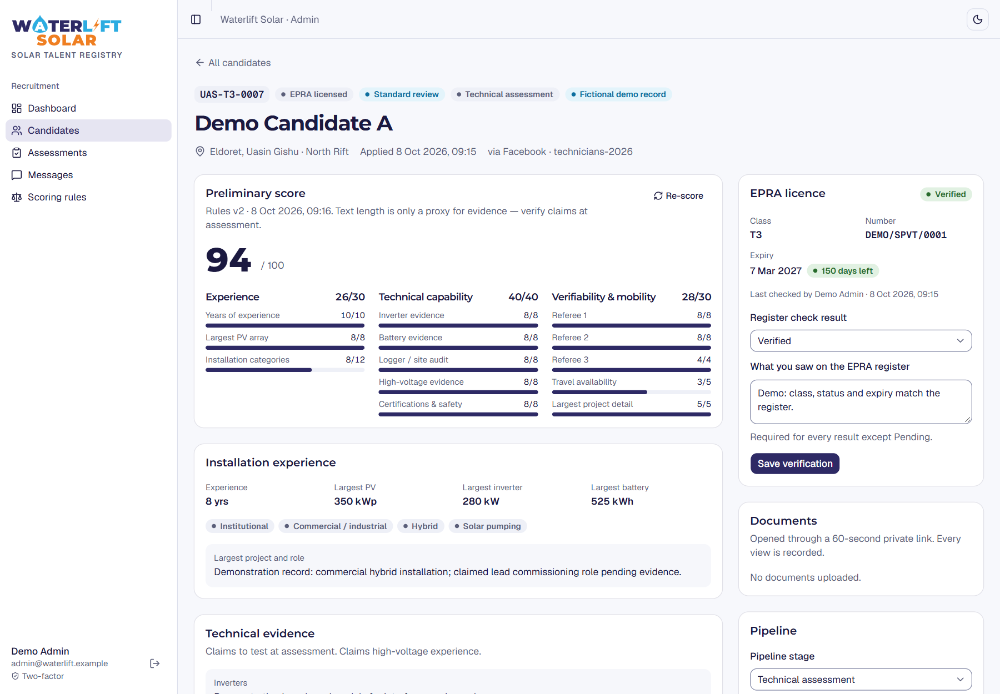
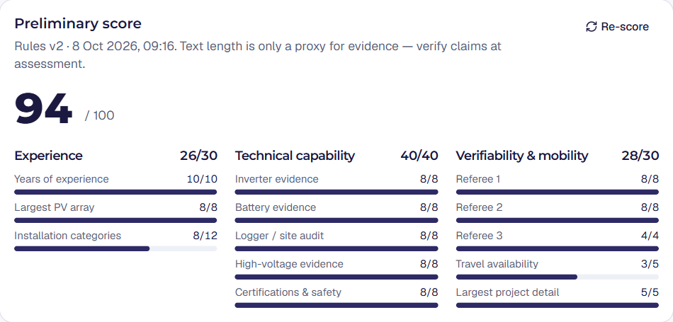
The score (out of 100) is made of Experience (30), Technical capability (40) and Verifiability & mobility (30). Each line shows the points earned and the maximum. If the credential gate failed, the reasons are listed (for example "Licence expired 12 days ago").
Re-score recalculates using the current scoring rules — useful after new rules are published. Earlier scores are kept in the history.
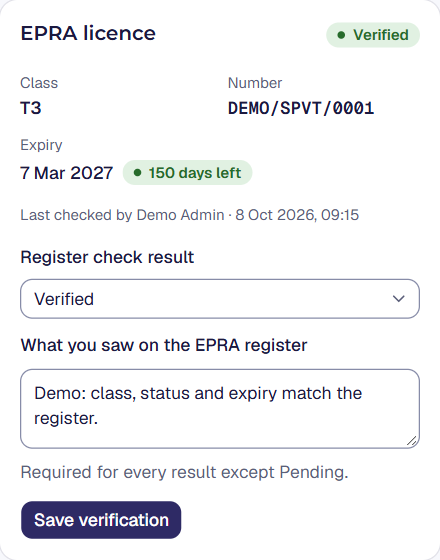
The expiry badge turns amber within 90 days and red once expired.
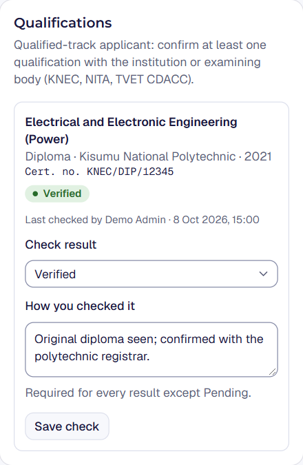
There is no public register for qualifications, so confirm each one with the issuing college or examining body (KNEC, NITA, TVET CDACC), or by seeing the original certificate.
For qualified-track candidates, confirm at least one qualification at or above the minimum level. EPRA-licensed candidates' qualifications are optional extras.
Uploaded files (licence copies, qualification and training certificates) are listed in the Documents card. Clicking one opens it through a private link that expires after 60 seconds. Every view is recorded.
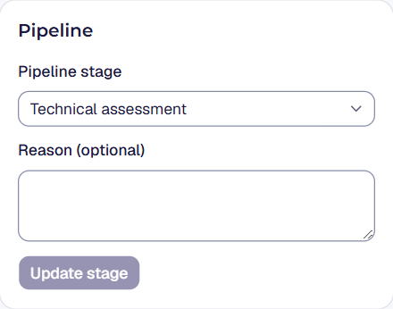
Choose the new stage and Update stage. Stages: New application → Technical assessment → Practical assessment → Reference checks → Approved pool, plus Rejected after review and Withdrawn.
Rejected and Withdrawn require a reason of at least 10 characters — the candidate may ask why. Scheduling an assessment moves the stage forward automatically.
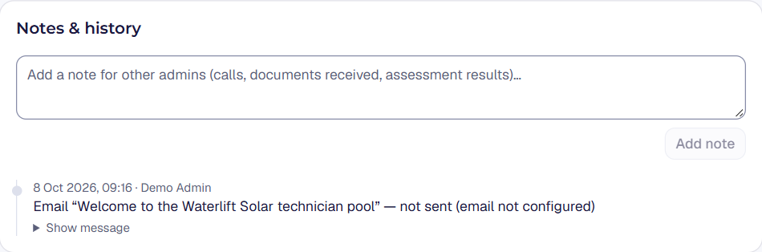
Add notes for other admins — phone calls, documents received, referee feedback. The history below lists notes, stage changes, verifications, scores, emails and document views with who did them and when. History cannot be edited or deleted.
The page also has Contact details (tap to call or email), the candidate's Consents, an Assessments card (chapter 8), a Message composer (chapter 9) and Data protection (chapter 11).
Shortlisted candidates take a technical (knowledge) and/or practical (hands-on) assessment. Results stay with the application.
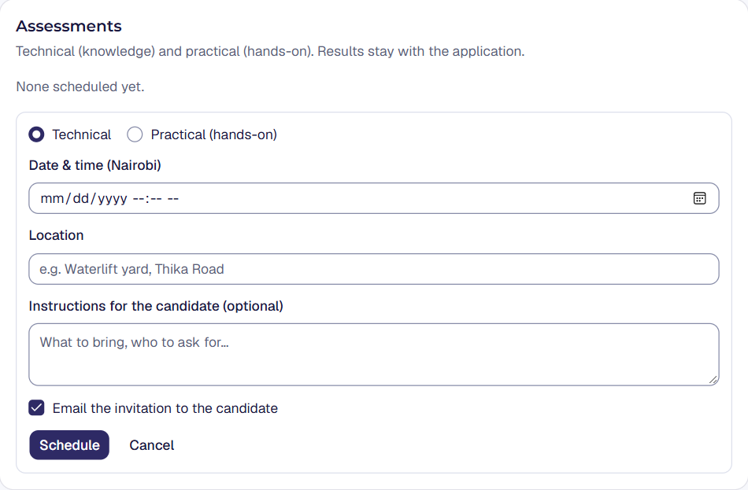
The application moves to the matching stage if it is not already further along.
After the assessment time, the candidate page and the Assessments page show it as awaiting result. Record whether it was completed (with Pass or Fail and an optional score out of 100), a no-show or cancelled, plus assessor notes.
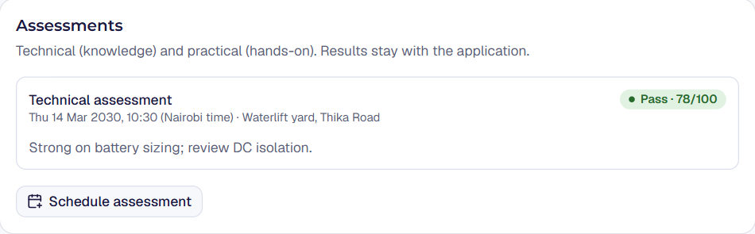
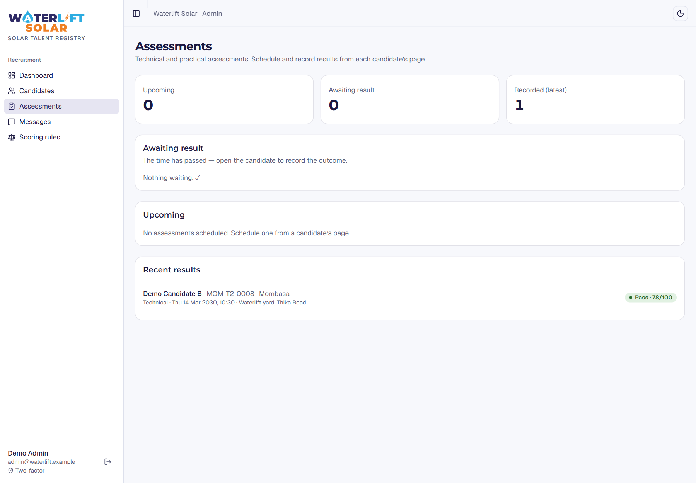
All email is sent from info@waterlift.co.ke as "Waterlift Solar Careers". Replies go to that inbox.
Use the Message card on the candidate page. Pick a template or write your own, then Send email. The message appears in the candidate's history.
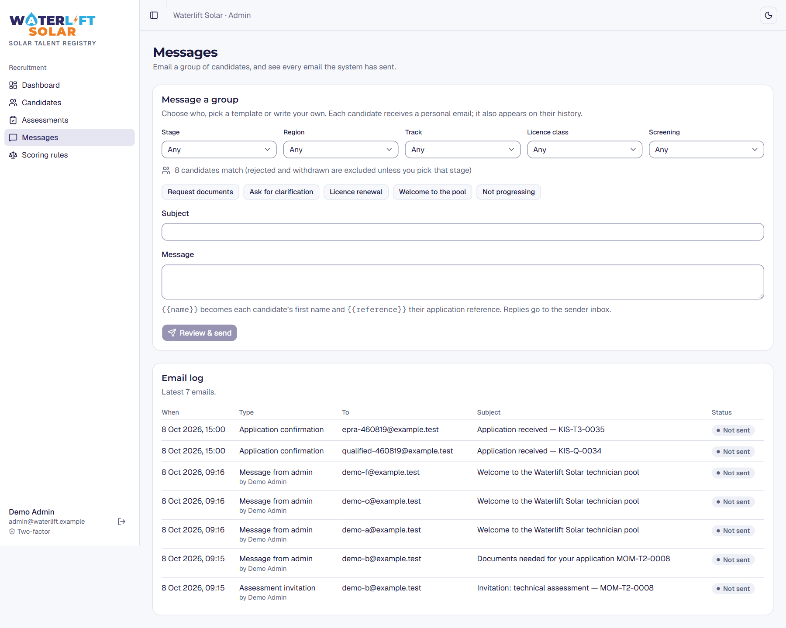
{{name}} for each candidate's first name and {{reference}} for their reference.The bottom of the Messages page lists every email the system has sent, with type, recipient, subject, who sent it and status: Sent Not sent (email not configured) or Failed.
| To | When | |
|---|---|---|
| Application received | Candidate | Straight after submitting, with the reference and a 30-day status link. |
| Status link | Candidate | When they ask for a new link on the status page. |
| Licence expiry reminder | Candidate (open applications) | 90, 30 and 7 days before their EPRA licence expires, and on the day. Each reminder is sent once. |
| Assessment invitation | Candidate | When an assessment is scheduled with "Email the invitation" ticked. |
| Daily summary | Every admin | Every morning (about 08:00 Nairobi): new applications, priority reviews, credentials awaiting checks, licences expiring within 30 days. |
| Invitation / password reset | Admins | When an admin is invited or uses "Forgot password?". |
The preliminary score sorts applications so the strongest are reviewed first. Its weights and thresholds are set on the Scoring rules page and are versioned, so you can always see which rules produced a score.
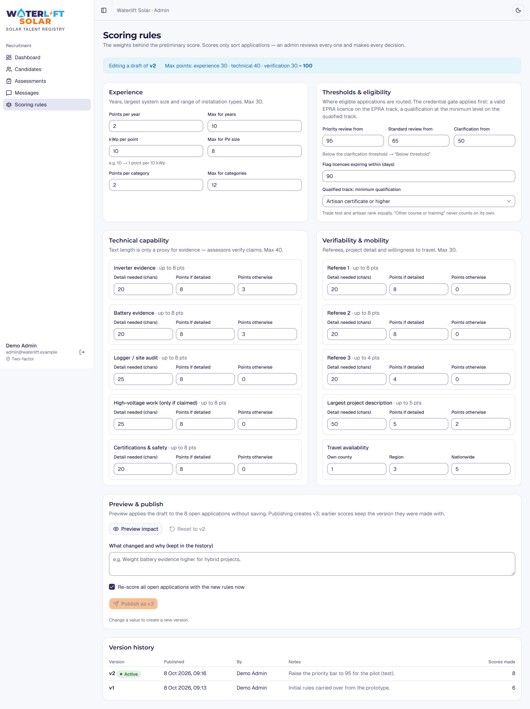
The editor will not publish invalid rules, for example thresholds out of order or weights that make Priority review impossible to reach. The Version history shows who published each version and why.
The system is designed around Kenya's Data Protection Act 2019. These features help Waterlift meet its obligations — they don't replace good judgement.
Candidates give consent to recruitment processing and to verification of their licence and qualifications; joining the talent pool is optional. Each consent is stored with the date and the version of the privacy notice they saw. The Consents card on the candidate page shows them.
| Situation | What happens |
|---|---|
| Application open or in the approved pool | Kept. |
| Rejected or withdrawn | Erased automatically 12 months after the application closed. |
| Rejected or withdrawn, with talent-pool consent | Erased automatically 24 months after closing. |
The check runs every day. Erasure removes the candidate, their applications and their uploaded files, leaving only a record that an erasure happened (with no personal details).
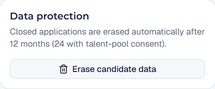
careers.waterlift.co.ke/privacy. It is a draft awaiting review by Waterlift's data protection lead; any change to it or to the consent wording must be versioned by the system administrator.| Question | Answer |
|---|---|
| I get "That code didn't match". | Use the current code — they change every 30 seconds. Check your phone's time is set automatically; a wrong clock produces wrong codes. |
| I'm signed in but sent to the two-factor page. | Two-factor isn't set up on your account yet. Complete the set-up (chapter 2). |
| "This account does not have admin access." | Your login exists but isn't an active admin. Ask the system administrator. |
| A candidate didn't get the confirmation email. | Ask them to check spam. Look in the email log (Messages page) for its status. They can request a new status link at /status. |
| A candidate says they can't continue on the form. | Each step shows a red message under the field that needs attention. Common causes: phone not a Kenyan number, licence expiry missing, no qualification added on the qualified track, or a consent box not ticked. |
| A candidate chose the wrong track. | Ask them to apply again choosing the right track (the same email is fine), then withdraw the first application with a reason. |
| A licensed candidate shows "Ineligible (credentials)". | Open the score card: the reasons are listed. Usually an expired or missing expiry date. Confirm with the candidate and ask for renewal evidence. |
| A group email says too many recipients. | Group sends are limited to 100. Add filters (region, stage, track) and send in batches. |
| Scores changed overnight. | Someone published new scoring rules and re-scored. Check Scoring rules → Version history. |
| Where do candidates' replies go? | To the info@waterlift.co.ke inbox. Record anything important as a note on the candidate. |
| Result | Meaning and suggested action |
|---|---|
| Priority review | Score 80–100 and eligible. Verify credentials and invite to the technical assessment first. |
| Standard review | Score 65–79. Standard evidence review. |
| Needs clarification | Score 50–64. Request missing documents or details. |
| Below threshold | Score under 50. A person checks before any adverse action. |
| Ineligible (credentials) | Licence or qualification gate failed. Confirm with the candidate first. |
| Admin label | What the candidate sees | Notes |
|---|---|---|
| New application | Received — under review | Starting stage. |
| Technical assessment | Assessment stage | Set automatically when a technical assessment is scheduled. |
| Practical assessment | Assessment stage | Set automatically when a practical assessment is scheduled. |
| Reference checks | Reference checks | |
| Approved pool | Approved — in our technician pool | Kept until it is closed. |
| Rejected after review | Not progressing at this time | Reason required. Retention clock starts. |
| Withdrawn | Withdrawn | By an admin (reason required) or the candidate. Retention clock starts. |
| EPRA licence | Meaning |
|---|---|
| Pending | Not checked yet |
| Verified | Matches the register |
| Not on register | Could not be found |
| Mismatch | Details differ |
| Expired | Register shows expired |
| Qualification | Meaning |
|---|---|
| Pending | Not checked yet |
| Verified | Confirmed |
| Could not confirm | Institution couldn't confirm it |
| Details don't match | Details differ |
NITA trade test (Grade I–III) and Artisan certificate (equal) · Certificate (TVET / KNEC / CDACC) · Diploma · Higher National Diploma · Degree (BSc / BEng / BTech). "Other course or training" is recorded but never meets the minimum on its own.
| Section (max) | Criterion | Points |
|---|---|---|
| Experience (30) | Years of experience | 2 per year, up to 10 |
| Largest PV array | 1 per 10 kWp, up to 8 | |
| Installation categories | 2 per category, up to 12 | |
| Technical (40) | Inverter evidence | 8 if over 20 characters, otherwise 3 |
| Battery evidence | 8 if over 20 characters, otherwise 3 | |
| Logger / site audit | 8 if over 25 characters | |
| High-voltage evidence | 8 if claimed and described in over 25 characters | |
| Certifications & safety | 8 if over 20 characters | |
| Verifiability & mobility (30) | Referees 1, 2 and 3 | 8, 8 and 4 if over 20 characters each |
| Travel availability | Anywhere in Kenya 5 · region 3 · county 1 | |
| Largest project detail | 5 if over 50 characters, otherwise 2 |
These are the original (version 1) weights. The rules in force may differ — check the Scoring rules page.